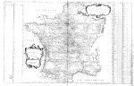

Nouvelle carte qui comprend les principaux triangles qui servent de fondement à la déscription géometrique de la France levée par ordre du Roy par Maraldi et Cassini de Thury de l’Académie Royale des Sciences. [Schaal circa 1:1.750.000.] Kopergravure, 580 x 910 mm. Paris, 1744. -- (COLLBN 004-05-063)
Tegen het einde van de zeventiende eeuw nam Frankrijk het initiatief voor een nieuwe wetenschappelijke benadering van de cartografie, waarbij de Académie Royale des Sciences een belangrijke rol speelde. Betere instrumenten en nieuwe methoden en technieken stelden de astronomen en geografen in staat om steeds nauwkeuriger waarnemingen te verrichten. Colbert, minister van Lodewijk XIV, nam het initiatief tot een onderneming die meer dan een eeuw in beslag zou nemen: de hermeting van Frankrijk en de vervaardiging van een grootschalige kaart van het land. Een van de mijlpalen op de lange weg naar de uiteindelijke voltooiing in 1789 van de Carte de la France in honderdtachtig bladen wordt gevormd door deze kaart. De titel verwijst zowel naar hetgeen al bereikt is, als naar wat nog gedaan moet worden.
De kaart toont het net van de voltooide triangulatie, dat als meetkundige basis voor de toekomstige kartering moet dienen. De centrale as wordt gevormd door de meridiaan van het observatorium van Parijs, waarvan de meting van Duinkerken in het noorden tot Perpignan in het zuiden in 1720 voltooid was. Op de centrale as werden ‘perpendiculaires’ aangebracht, onder andere ter hoogte van Parijs, Boulogne en Orleans, om de meting in oostelijke en westelijke richtingen voort te zetten. Vervolgens werden de Atlantische kust, de zuidelijke grenzen, de Alpen, de Rijn en de noordgrens gemeten. Ter controle vergeleek men van tijd tot tijd de uitkomsten van de metingen met die van een extra basismeting, op de kaart aangegeven met ‘base’, bij voorbeeld ten oosten van Arles en ten noorden van Bazel. In tien jaar tijd, van 1730 tot 1740, werd het land zo onder leiding van Cassini en Maraldi geleidelijk aan met een net van vierhonderd driehoeken bedekt. De breedte- en lengtecoördinaten van de hoekpunten waren met behulp van de astronomische plaatsbepaling berekend. Het resultaat was een correctie van het kaartbeeld van Frankrijk, dat in oost-westelijke richting aanzienlijk was ingekrompen ten gevolge van de nauwkeuriger lengtebepalingen.
Literatuur
- L.A. Brown, The story of maps. Boston 1949, p. 247-256.
- G. Kish, La carte, image des civilisations. Paris 1980, p. 268-273.
| vorige pagina | top pagina |